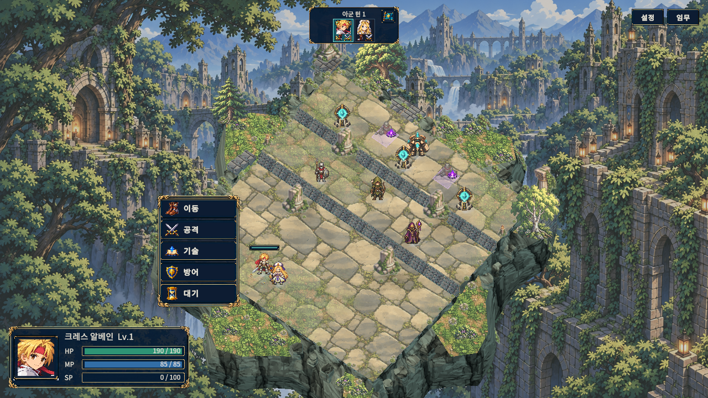
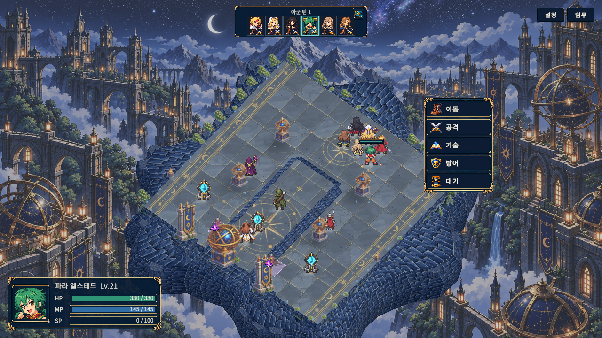
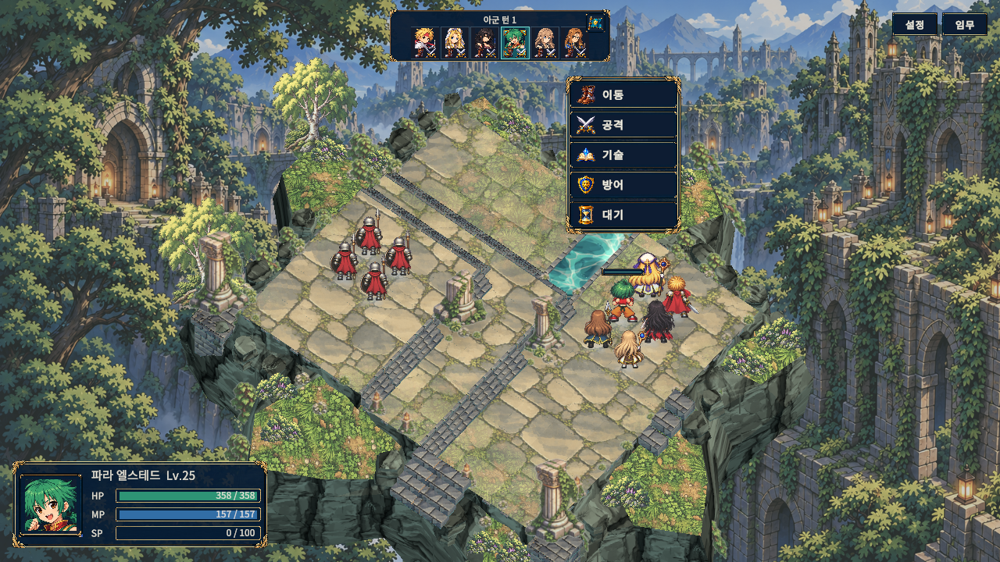
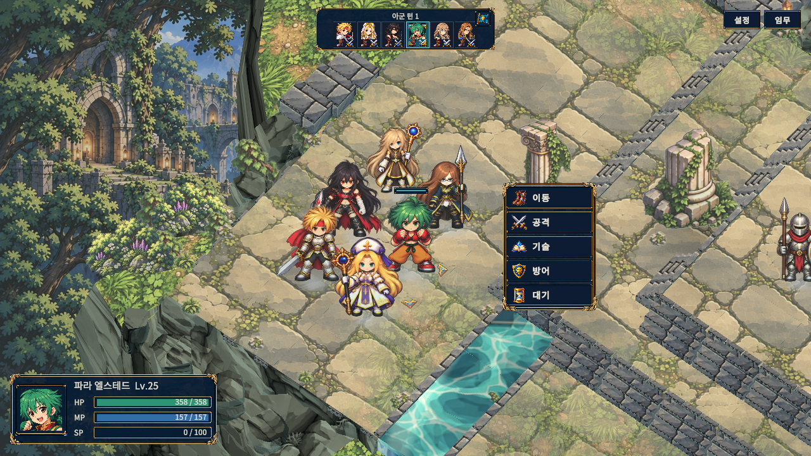
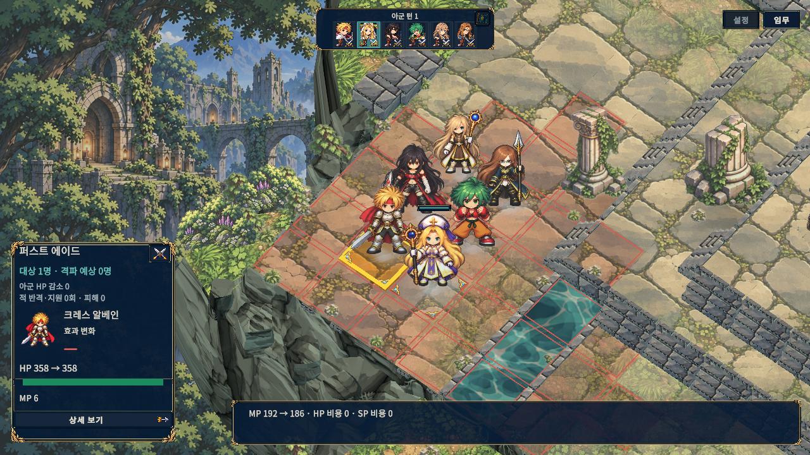
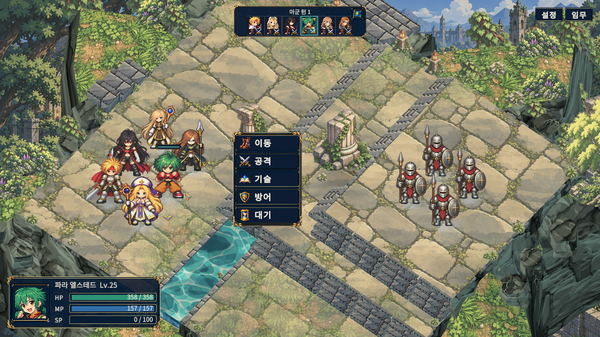

기본 전장 — 1화

밤의 지형 — 반대 방향

훈련 6인 — 후면과 단차

훈련 6인 — 근접 접지

대상 선택과 예측 패널

확대 화면·130% 글자

Final3 검수 플레이어가 출력한 PNG를 바이트 변경 없이 복사했습니다. 이미지를 클릭하면 원본 크기로 열립니다. 원본 경로·SHA-256 · 16장 표본의 시각 점수와 한계






전장 run f517cd317b93446085feca7a91a6b6ca · HUD run 504eb11b980e4101b55ee0be8274cded. 전체 자동 캡처 122장 중 직접 육안 확인은 전장 10장·HUD 6장이며, 이 페이지는 그중 6장만 보존합니다. 알펜은 이 6인 명단에 없습니다.